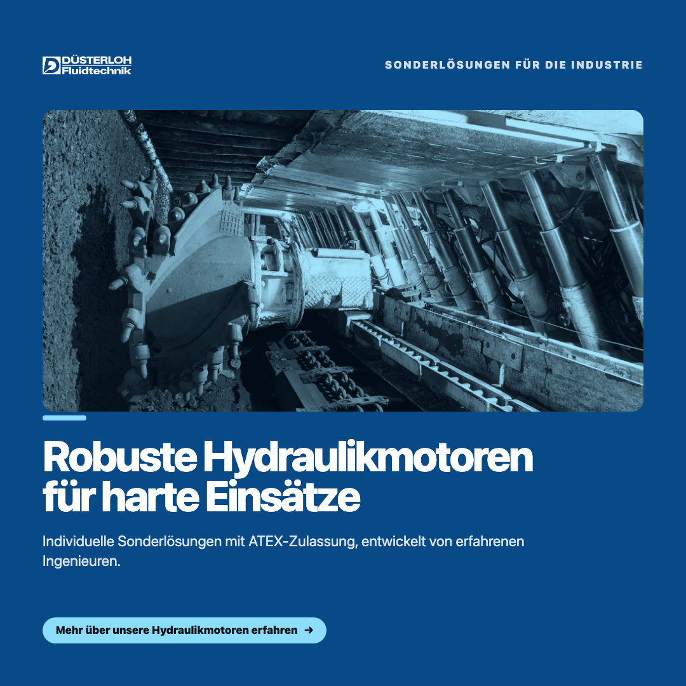
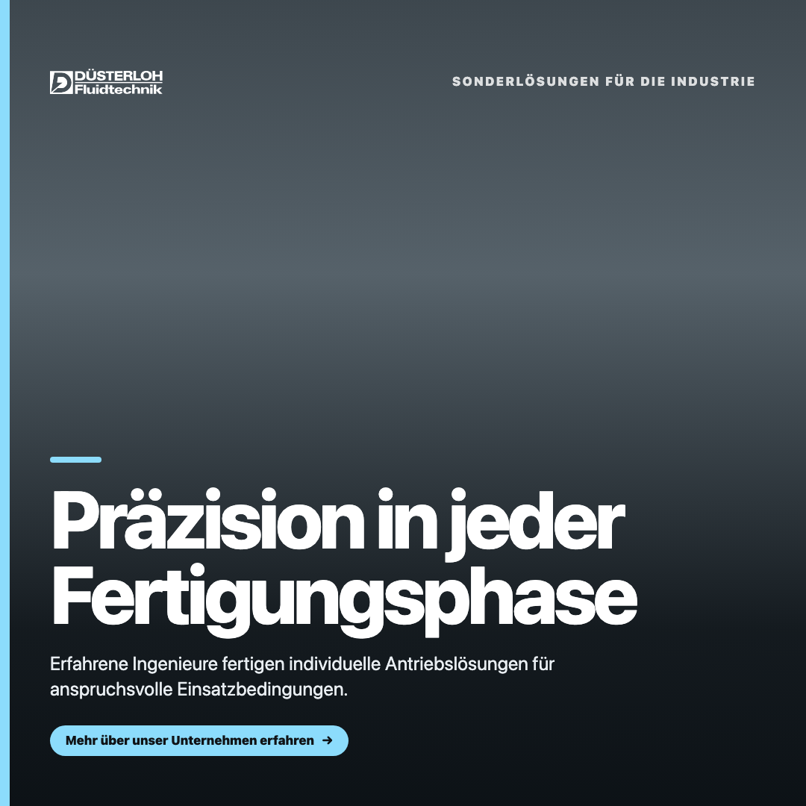
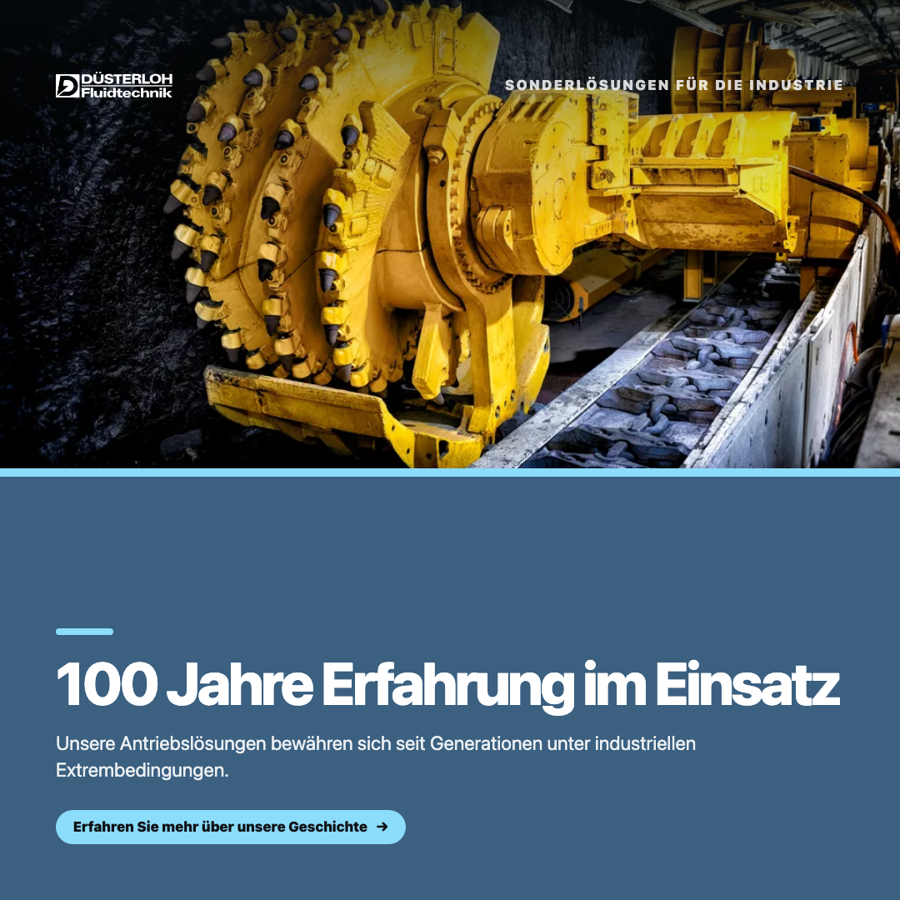

MARKETS
EDITION 07 · 2026
Düsterloh
Fluidtechnik
Wie Düsterloh Fluidtechnik seine über 100-jährige Fachkompetenz in sichtbare, glaubwürdige Social-Media-Präsenz übersetzt.
![Düsterloh Fluidtechnik]()
Wo Düsterloh Fluidtechnik
heute steht
Bestandsaufnahme von Marke, Kanälen und bisheriger Kommunikation — ehrlich und ohne Schönfärberei.
Wo Düsterloh Fluidtechnik heute steht
Stärken treffen Chancen
- —Über 100 Jahre Erfahrung als Partner der Industrie
- —ATEX-Zulassung für explosionsgefährdete Bereiche als belegtes Qualitätsmerkmal
- —Individuelle Sonderlösungen statt Standardprodukte, entwickelt von erfahrenen Ingenieuren
- —Konzeption, Fertigung und Wartung aus einer Hand
- —Kein Social-Media-Profil von der Website aus verlinkt
- —Fehlende Canonical-Tags auf allen sechs Seiten
- —Keine Open-Graph-Tags für Social-Media-Vorschau
- —Keine Frage-Antwort-Inhalte für KI-Sichtbarkeit vorhanden
- —LinkedIn kann Fachautorität im B2B-Umfeld sichtbar machen
- —Regelmäßige Bespielung kann Vertrauen bei Entscheidern aufbauen
- —Einblicke in Fertigung und Mitarbeitende können Recruiting unterstützen
- —Risiko, dass Wettbewerber digital präsenter wahrgenommen werden
- —Risiko, dass Fachzielgruppen online nicht erreicht werden
- —Fehlende KI-Sichtbarkeit kann Reichweite bei neuen Suchmustern schmälern
Klare Ziele,
klare Kennzahlen
Vier priorisierte Ziele, abgeleitet aus dem Status quo — jedes mit Kennzahlen, an denen sich Erfolg messen lässt.
Vier Ziele, die aufeinander einzahlen
Belegte Fakten wie Erfahrung und ATEX-Zulassung sichtbar machen, um Glaubwürdigkeit bei Entscheidern zu stärken.
Regelmäßiger Fachcontent auf LinkedIn positioniert Düsterloh als kompetenten Ansprechpartner für Sonderlösungen.
Produkte und Leistungen wie Hydraulikmotoren und CAD-Modelle über alle Kanäle konsistent präsentieren.
Einblicke in Fertigung und Ingenieurteam schaffen Nähe und unterstützen Reputation sowie Recruiting.
Drei Kanäle,
klare Rollen
LinkedIn, Instagram und Facebook — jeder mit eigener Aufgabe, Zielgruppe und Tonalität, aber einer gemeinsamen Story.
Jeder Kanal mit eigener Aufgabe
Einmal produzieren, dreimal erzählen
Ein Kernthema – etwa die ATEX-Zulassung oder eine Sonderlösung – wird für jeden Kanal passend übersetzt: fachlich auf LinkedIn, visuell auf Instagram, zugänglich auf Facebook.
Technische Tiefe: Wie die ATEX-Zulassung explosionsgefährdete Einsatzbereiche sicher macht.
Blick in die Fertigung: Wie eine Sonderlösung von der Idee zum robusten Antrieb wird.
100 Jahre Erfahrung, ein starker Partner für die Industrie – kurz vorgestellt.
Fünf Content-
Pillars
Ein System aus Themensäulen — damit jeder Beitrag ein Ziel hat und die Marke über Zeit ein klares Profil bekommt.
Fünf Säulen, ein Profil
Erklärungsbedürftige Themen rund um Hydraulik- und Pneumatikantriebe verständlich vermitteln und dadurch fachliche Vertrauenswürdigkeit aufbauen.
Das Leistungsspektrum entlang konkreter Kundennutzen erklären statt nur aufzuzählen.
Werte und Qualitätsversprechen aus dem Markenauftritt mit belegbaren Inhalten unterlegen.
Einblicke in Mitarbeitende und Arbeitsweise geben, um Nähe zu schaffen und Reputation sowie Recruiting zu stärken.
Nur belegte Zahlen und nachvollziehbare Entwicklungen zeigen, um Glaubwürdigkeit ohne unbelegte Superlative zu schaffen.
Von der Säule zum Beitrag
Vom Plan
zum Beitrag
Ein konkreter Redaktionsplan über vier Wochen — mit realistischer Frequenz, Formatmix und ausgewogenen Contentschwerpunkten.
Redaktionsplan · Woche 1 & 2
Redaktionsplan · Woche 3 & 4
Zwölf Posts,
kein Copy-Paste
Vier Beiträge je Kanal — kanalgerecht in Tonalität, Format und CTA, als fertige KI-Motive im 4-Wochen-Kalender. Anschließend drei davon als Mockup im Düsterloh Fluidtechnik-Branding.
Zwölf Motive, ein Fahrplan

Fachwissen & Problemlösung
Hydraulikmotoren müssen dort funktionieren, wo Standardlösungen an ihre Grenzen kommen: in Bergbau, Fördertechnik und Marine. Bei Düsterloh Fluidtechnik entwickeln erfahrene Ingenieure individuelle Sonderlösungen, die auf die jeweilige Einsatzumgebung abgestimmt sind – robust konstruiert und bei Bedarf mit ATEX-Zulassung für explosionsgefährdete Bereiche. Seit über 100 Jahren verbinden wir Konzeption, Fertigung und Wartung aus einer Hand, um Antriebslösungen zu liefern, die auch unter anspruchsvollen Bedingungen zuverlässig arbeiten. Sprechen Sie uns an, wenn Ihre Anwendung eine maßgeschneiderte Lösung erfordert.
#Hydraulikmotoren #Fluidtechnik #Industrie #ATEX


Menschen & Unternehmenskultur

düsterloh_fluidtechnik Jede individuelle Antriebslösung beginnt mit einem Plan – und wird von erfahrenen Ingenieuren bis ins Detail gefertigt. Bei Düsterloh Fluidtechnik verbinden wir jahrzehntelange Erfahrung mit präziser Fertigung, damit unsere Hydraulik- und Pneumatikantriebe auch unter rauen Bedingungen zuverlässig arbeiten. Ein Blick hinter die Kulissen zeigt: Qualität entsteht im Detail.

Vertrauen, Qualität & Verantwortung
Seit über 100 Jahren ist Düsterloh Fluidtechnik ein starker Partner für die Industrie – in unterschiedlichsten Anwendungsgebieten, von der Stahlindustrie bis zur Marine. Diese Erfahrung fließt in jede individuelle Sonderlösung ein, die wir für unsere Kunden entwickeln. Wir sind stolz auf diese Tradition und freuen uns, sie auch in Zukunft mit unseren Partnern fortzuschreiben.

Von der Idee
zur Umsetzung
Was wir empfehlen — und wie eine Zusammenarbeit konkret abläuft, Schritt für Schritt.
Vier Empfehlungen auf den Punkt
Regelmäßige Fachbeiträge zu Sonderlösungen und Qualitätsmerkmalen etablieren, um Vertrauen bei technischen Entscheidern aufzubauen.
Canonical- und Open-Graph-Tags ergänzen, um Auffindbarkeit und Social-Media-Vorschau der Website zu verbessern.
Frage-Antwort-Formate zu Hydraulik- und Pneumatiklösungen entwickeln, um in KI-gestützten Suchergebnissen zitierfähig zu werden.
Einblicke in Fertigung und Ingenieurteam auf Instagram zeigen, um Nähe zu schaffen und Recruiting zu unterstützen.
So arbeiten wir zusammen
Ziele, Tonalität und Themen gemeinsam schärfen.
Monatlicher Contentplan je Kanal und Pillar.
Text, Grafik & Video — im Branding des Kunden.
Kurze Freigabeschleife — Sie behalten die Kontrolle.
Ausspielung, Monitoring und Antworten.
Kennzahlen auswerten — und zurück zu Schritt 1.
Was Umsetzung kostet
Marketingkonzept, 9 Posts, Flyer, Print-Vorlagen, Visitenkarten, private Landingpage & SEO/GEO-Check — in 24 h.
Sprechen wir über
Ihre Sichtbarkeit.
Ein unverbindliches Erstgespräch genügt, um zu sehen, was für Düsterloh Fluidtechnik realistisch drin ist. Ich freue mich darauf.
MARKETS
![QR-Code]()